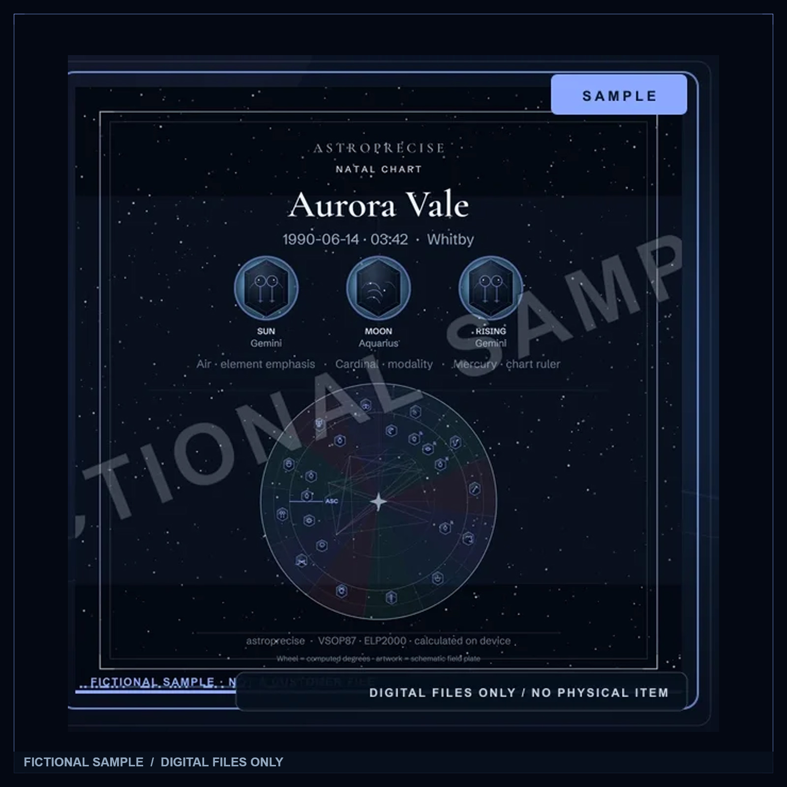
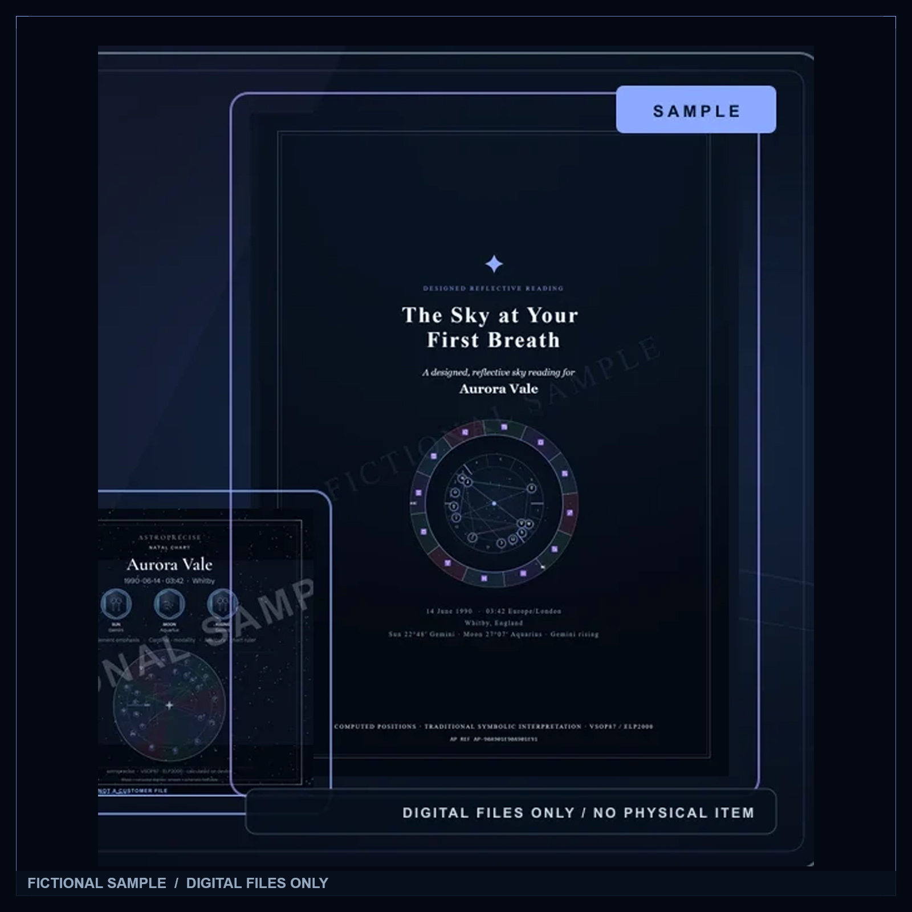
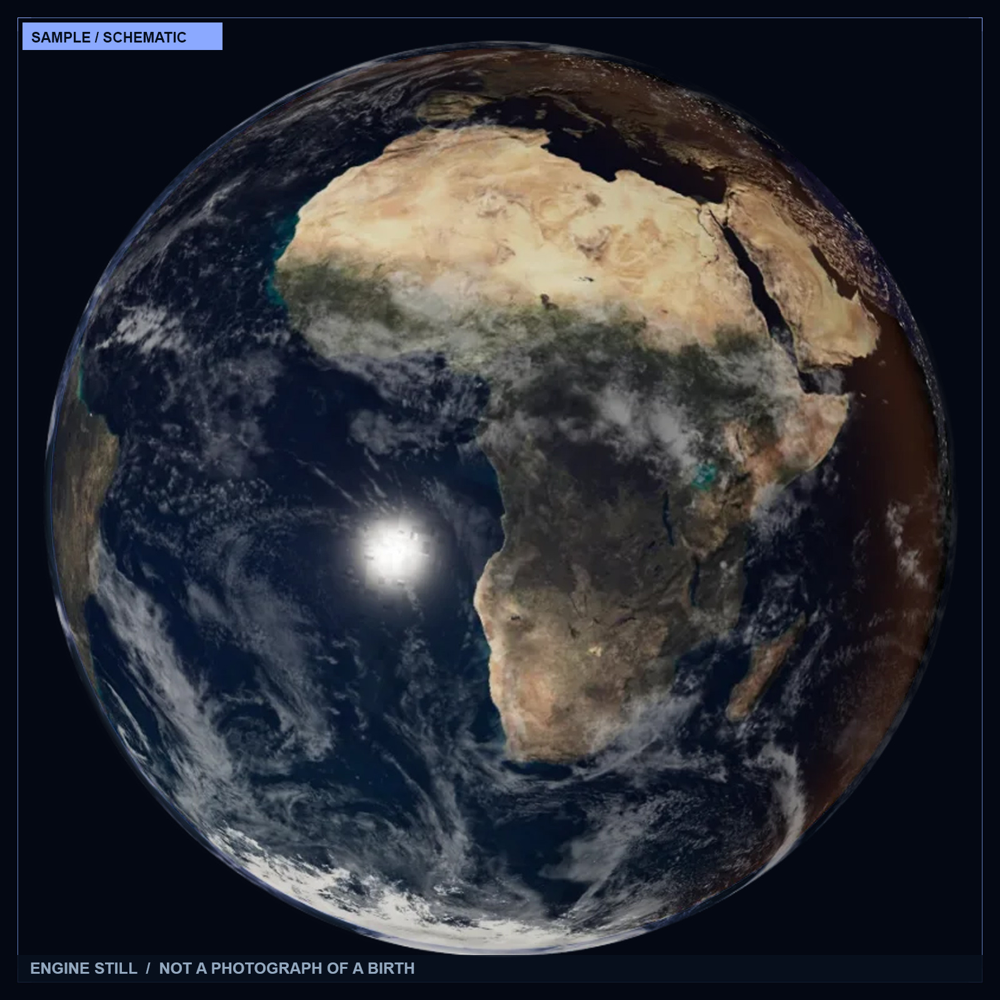

01 / A card to keep
Clean sky
card
A digital card of the computed chart, without a studio watermark.
- One digital sky card
- Made from the chart already on your device
- Symbolic artwork, not a photograph of the sky
£7Opening soon
Opening soon
The AstroPrecise Studio
Your birth chart, composed as a digital print. Start with your own sky, then explore the editions taking shape here.
Your chart is free. No account needed.

01 Computed from a birth chart
02 Designed as digital files
03 Free chart always available
The forthcoming editions
Checkout is closed. These are the planned prices. Nothing on this page can be bought.
01 / A card to keep
A digital card of the computed chart, without a studio watermark.
£7Opening soon
Opening soon

02 / The rest of the sitting
Chapters 2 to 7. Chapter 1 and the birth chart stay free.
£18Opening soon
Opening soon

03 / A short note
A short symbolic note for the following month.
£4.50Opening soon
Opening soon
Before you look ahead
Make something of your own today
Start with your free chart. You can turn it into a sky card to keep.
Already have a chart? Make your free sky card ↗